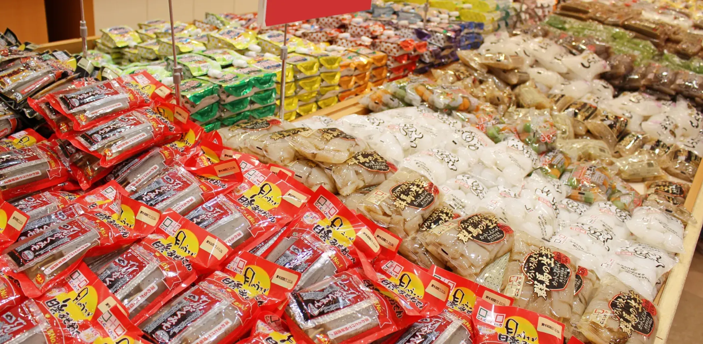
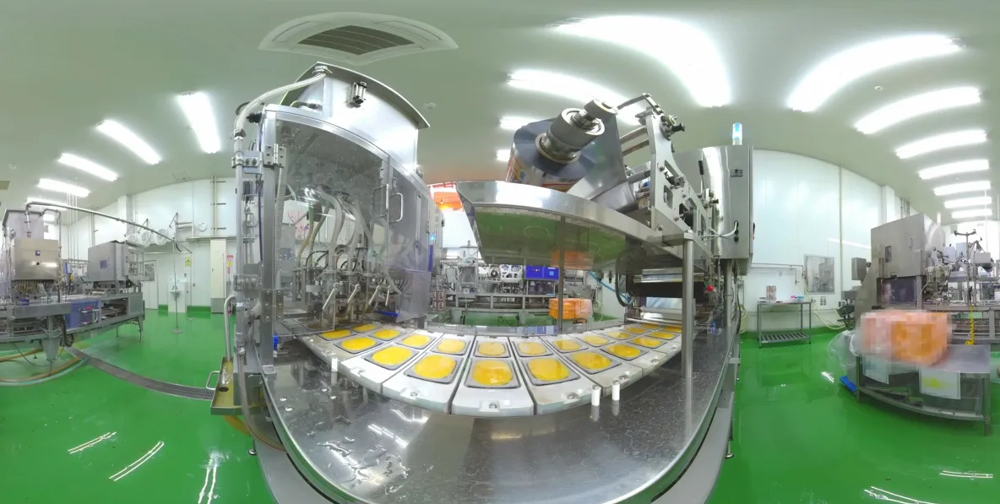
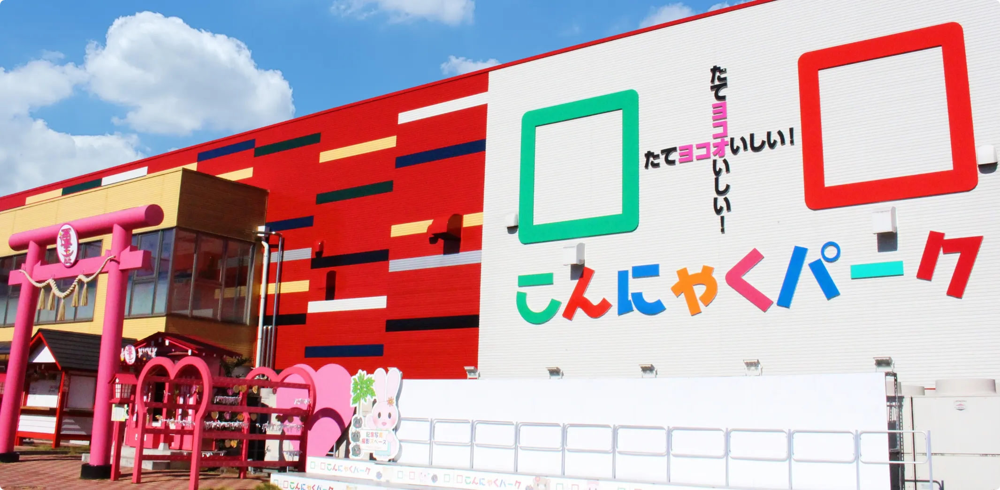

無料バイキングで人気のこんにゃくパークから、約300種の商品、ヘルシーな新商品の開発秘話まで。テレビ・新聞・WEBメディアの皆さまに、取材しやすい形で情報をお届けする広報ページです。
新商品、季節イベント、工場のこと。メディアの方がそのまま企画にできる形で、週1本のペースで発信します。※記事は提案イメージのサンプルです。実運用では外部広報担当が取材・執筆を代行します
自由研究にも人気の工場見学コース。夏の来園ピークに合わせた見どころをまとめました。

健康志向の高まりに応える新商品。開発担当者のコメントと試食レビューを掲載予定。

国際的な食品安全認証を取得した工場の裏側を、写真つきでご紹介します。

テレビ・新聞・雑誌・WEBメディアの皆さまの撮影・取材を歓迎します。ご連絡から最短で日程を調整します。
※申込導線は御社の既存フォームに接続します
来園者が撮りたくなるパークだから、SNSとの相性は抜群。公式発信を絶やさないことが、次の来園と商品ファンを生みます。※投稿の企画・撮影・運用体制もあわせてご提案します
| 社名 | 株式会社 ヨコオデイリーフーズ |
|---|---|
| 本社 | 〒370-2202 群馬県甘楽郡甘楽町小幡204-1 TEL 0274-70-4000（代表） |
| 創業／設立 | 1968年（昭和43年）3月 創業／1989年（平成元年）6月 法人設立 |
| 代表 | 代表取締役 横尾 浩之 |
| 従業員数 | 約200名（派遣含む） |
| 事業内容 | こんにゃく製品および加工食品の製造販売（自社ブランド・OEM）／観光施設「こんにゃくパーク」の運営 |
※認証名・工場体制などの詳細は御社と相談のうえ正確に記載します。